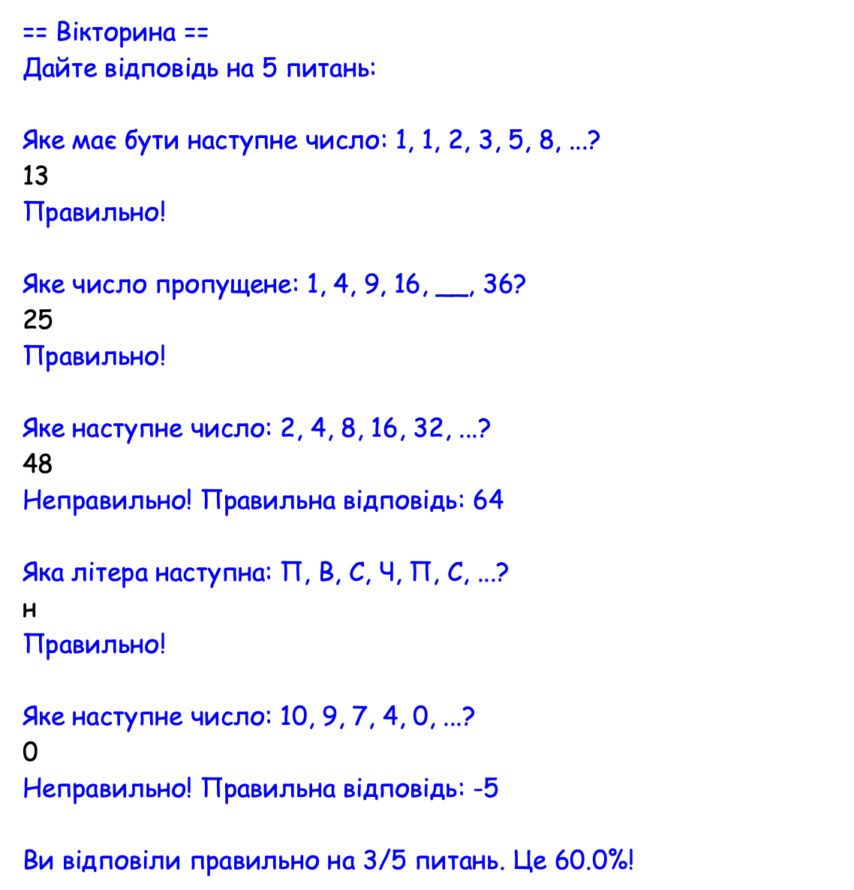

Частина 1
Частина 1
▶
Математика, input та f-рядки
Математика
print(20 + 10 * 2 - 5 / 5)
print(3**2)
print(10 // 3)
print(10 % 3)
print(math.sqrt(25))
print(math.pi)- Щоб цей код спрацював, не вистачає одного рядка. Якого?
- Що виведеться в консоль після виконання цього коду (якщо дописати відсутній рядок)?
input та f-strings
age = int(input("How old are you? "))
next_year = age + 1
price = 100.50
discount = float(input("What's the discount? "))
new_price = price - discount
print(f"Next year you will be {next_year}yo.")
print(f"The new price is: {new_price:.2f}.")- Який тип даних завжди повертає input()? Для чого потрібні int()/float()?
- Поясни, що означає :.2f в {new_price:.2f}.
✍️ Завдання 1
Запитай в користувача радіус кола і збережи у змінну. Порахуй і виведи у консоль площу кола (π x r^2), заокругливши результат до двох знаків після крапки. Для обчислень використай бібліотеку math.
Очікування...
Частина 2
▶
Оператори (порівняння, логічні) та умови if/elif/else
Оператори
print(10 <= 10)
print(10 > (25 - 14))
print("a" == "A".lower())
age = 25
print(age >= 25 and age < 30)
print(age > 90 or age < 30)
print(not age == 25)- Яка різниця між = та ==?
- Яка різниця між and та or?
- Що виведеться в консоль після виконання цього коду?
Умови
age = int(input("Enter your age: "))
if age > 0 and age <= 12:
print("Kid")
elif age > 12 and age < 18:
print("Teen")
elif age >= 18:
print("Adult")
else:
print("Invalid age!")- Що виведеться в консоль, якщо age = 12? А якщо age = 55?
- Що буде, якщо користувач введе -100? А якщо введе abcd?
- Чому після else немає ніякої умови?
✍️ Завдання 2
У кінотеатр на фільм "16+" пускають глядачів віком від 16
років,
АБО молодших — якщо поруч є
дорослий.
Запитай вік користувача. Якщо вік менший за
16, запитай чи є поруч дорослий (відповідь "так"/"ні").
Виведи "Можна дивитись!" або "Обери інший фільм" залежно
від відповідей.
Очікування...
Частина 3
▶
Створення та редагування списків, та цикли по них
Списки: створення, індекси, зміни
fruits = ["apple", "banana", "cherry"]
print(fruits[0])
print(fruits[2])
print(len(fruits))
fruits.append("mango")
fruits.remove("banana")
fruits[1] = "kiwi"
print(fruits)
print("cherry" in fruits)
print("banana" in fruits)- Що таке індекси? Який індекс у першого елемента списку?
- Що станеться, якщо додати рядок print(fruits[10])?
- Що виведеться в консоль внаслідок виконання цього коду?
for item in list vs. for i in range(len(list))
colors = ["red", "green", "blue"]
# Цикл 1
for color in colors:
print(f"Color: {color}")
print("-" * 15)
# Цикл 2
n = len(colors)
for i in range(n):
print(f"Color {i+1}: {colors[i]}")- В чому різниця між циклами 1 та 2?
- Чому в коді використано {i+1}:, але {colors[i]} без +1?
- Як думаєш, який результат поверне вираз: list(range(3))?
✍️ Завдання 3
Запитай в користувача назву продукту, перетвори всі літери на
маленькі, і додай його у список.
Запитай, який продукт видалити, перевір, чи він є в списку;
якщо є, видали його, якщо немає — виведи відповідне
повідомлення.
В кінці виведи всі елементи списку по
черзі з допомогою циклу в форматі
"1. bread...".
Очікування...
Частина 4
▶
Словники
Створення, .get(), .pop()
scores = {"Alice": 90, "Bob": 85}
scores["Charlie"] = 78
scores["Alice"] = 95
print(scores.get("Bob"))
print(scores.get("Nick", "немає такого учня"))
removed = scores.pop("Bob", None)
print(scores)- Поглянь на рядки 3 та 4. Чи виконують ці рядки однакову дію зі словником? Що відбувається в кожному випадку?
- Чому scores.get("Nick", ...) не викликав помилку, хоча ключа "Nick" немає у словнику?
- Яким буде фінальний словник scores після усіх змін?
keys(), values(), items(), in
capitals = {
"Україна": "Київ",
"Франція": "Париж",
"Японія": "Токіо",
}
print(list(capitals.keys()))
print(list(capitals.values()))
if "Україна" in capitals:
print("Знаємо столицю України!")
for country, capital in capitals:
print(f"{country} — {capital}")
- Чим відрізняється capitals.keys() від list(capitals.keys())?
- Що перевіряє "Україна" in capitals — ключі чи значення?
- Чому цикл for використаний неправильно і програма видасть помилку?
✍️ Завдання 4
Запитай у користувача ім'я. Перевір, чи є така людина в телефонній книзі — якщо є, виведи її номер; якщо немає — виведи "Такого контакту немає". Потім за допомогою циклу виведи всю телефонну книгу в форматі "Ім'я: номер", додавши перед номером +38.
Очікування...
Частина 5
▶
Функції
def, параметри, значення за замовчуванням
def greet(name, greeting="Привіт"):
print(f"{greeting}, {name}!")
greet("Соня")
greet("Макс", "Вітаю")- Що таке параметр і чим він відрізняється від аргументу?
- Що виведе greet("Яна")? Звідки береться слово "Привіт", якщо ми його не передавали?
return та ранній return
def f(x):
return x**2 - 2*x + 5
for i in range(1, 6):
print(f"f({i}) = {f(i)}")- Чому функція з return тут підходить краще, ніж функція, яка одразу друкує значення?
- Як треба змінити цикл for, щоб знайти значення f(x) для x = 1, 2,..., 10?
def ask_name():
name = input("What is your name? ")
clean_name = name.strip(" .,?!").capitalize()
if not clean_name:
return "Unknown"
return clean_name
user_name = ask_name()
print(f"Hello, {user_name}!")
- Чому в функції вище слово return використане двічі? Що трапиться, якщо користувач не введе імʼя, а одразу натисне Enter?
- Що поверне функція, якщо користувач введе " oleNa.. , "?
✍️ Завдання 5
Напиши функцію
apply_discount(price, discount), яка приймає поточну ціну товару та розмір знижки у
відсотках, і повертає нову знижену ціну.
Додай "Early
return": якщо знижка менша за 0, поверни ціну товару без змін.
Перевір функцію на кількох прикладах (один вже даний,
один треба дописати).
Запитай ціну і знижку у користувача через
input() і виведи результат,
заокруглений до двох знаків після крапки.
Очікування...
Завдання: Вікторина
▶
Постановка завдання
Дано 5 питань:
- Яке наступне число: 1, 1, 2, 3, 5, 8, ...? → 13
- Яке число пропущене: 1, 4, 9, 16, __, 36? → 25
- "Яке наступне число: 2, 4, 8, 16, 32, ...?" → 64
- "Яка літера наступна: П, В, С, Ч, П, С, ...?" → Н
- "Яке наступне число: 10, 9, 7, 4, 0, ...?" → -5
Напиши програму-вікторину, яка по черзі задає користувачу питання, наведені вище. Тоді перевіряє його відповідь і виводить "Правильно!" або "Неправильно! Правильна відповідь: [відповідь]." Після завершення усіх питань виводиться повідомлення із загальним результатом, наприклад: "Ви відповіли правильно на 4/5 питань. Це 80%!" Код має бути добре структурований (наприклад, без повторів) та враховувати можливі помилки користувача (ввід "н" замість "Н", зайві пробіли).

Рекомендовані правила роботи над проєктом:
-
Розбий проєкт на менші частини.
Наприклад, замість "створити гру камінь-ножиці-папір", такі
кроки:
- Зберегти переможні комбінації у словнику.
- Навчити компʼютер робити випадковий вибір.
- Порівняти вибір гравця і комп'ютера та вивести результат.
- Тестуй програму з print(). Використовуй його не лише щоб побачити фінальний результат, а виводь проміжні значення змінних та тестуй функції і цикли, щоб переконатися, що програма робить саме те, що ти від неї очікуєш.
- Фокус на одній частині за раз. Не намагайся написати все одразу без зупинок. Переходь до наступного етапу, лише коли поточна частина повністю написана і протестована.
- Гуглити – нормально. Якщо ти не знаєш чи не памʼятаєш, як щось робиться (наприклад, як заокруглити число до двох знаків після крапки) – можна шукати відповіді та такі невеликі питання в інтернеті. Головне: не копіювати код, а зрозуміти, як він працює.